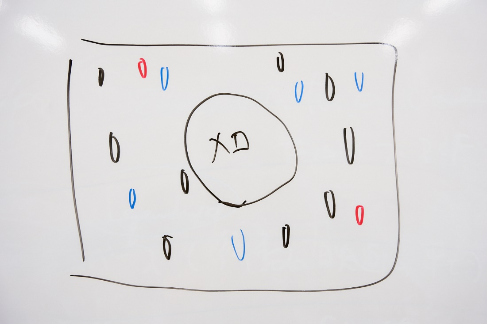

作品の色味から影響を受ける、牛尾憲輔の音作り
――まずは牛尾さんが『そばへ』に参加することになった経緯を教えていただけますか？
牛尾
東宝の武井克弘プロデューサーと以前からプライベートで仲が良くて、今回初めて仕事をご一緒しました。企画の概要やコンセプトを聞いて、僕もすぐに思い浮かぶ音楽があったので、参加を決めた流れです。同時に、短い尺の中で何ができるだろうかというトライも面白そうだなと思いました。
――石井監督は武井プロデューサーから音楽を牛尾さんが担当されると聞いて、どんなお気持ちでしたか？
石井
それはもう「是非お願いします」という気持ちでした。でも、作品に対する考えが深い方だという印象があったので、「厳格で怖い人だったらどうしよう……」と会う前は少し不安だったんです。
けれど打ち合わせをやってみると、「こういうことですか？」「このやり方は？」と提案をたくさんしてくださる方で。とてもコミュニケーションが取りやすかったですし、僕は「そうです」「いいですね！」といった具合でラクをさせてもらいました（笑）。
実際にいただいた音楽も僕の意図と合致していて、牛尾さんの汲み取る能力の高さを感じました。
――本作のコンセプトに“雨”と、丸井グループが掲げるテーマ“インクルージョン（包摂）”がありますが、音楽はどのようにイメージされましたか？
牛尾
雨は、以前の作品でテーマにしたことがあり、ある程度の引き出しがありました。インクルージョンのほうは「内包する」というイメージから、主題となるモチーフを包むように、メロディの周りに楽器を置いていこうと考えました。
（牛尾さん、ホワイトボードに図を描く）

図のように、大きな四角全体が曲だとすると、真ん中にメロディがあります。その周りにある一粒一粒が雨で、雨粒が集まって総体を成すような音楽にしたいと思い浮かんだので、これをベースにして完結しようと作りました。
――実際の曲作りはどんなプロセスでしたか？
牛尾
最初に作ったのはループのコード進行です。ピアノのメロディは最後のほうに書きました。
――メロディは最後なんですね。ちょっと意外です。
牛尾
僕の場合、複雑に絡まったものを快刀乱麻するようなメロディを作れると成功するように思っていて。特に今回は、雨となる要素がいっぱいに散りばめられている曲だったので。
最初にメロディを作ると、周りがその伴奏になってしまいがちなんです。そうなると面白くない。
全体の雰囲気って、ひとつずつの要素が組み合わさった総体として見えてくるものなので、メロディだけとか、ひとつの要素が抜きん出るようにはしたくないんです。
――とても印象的なメロディでしたし、本作はセリフが少なく音楽がとても際立っています。普段の劇伴制作と意識の違いはありましたか？
牛尾
しっかりしたメロディを付けました。お芝居に合わさると、メロディってうるさかったりするので、普段の劇伴ではあまり音符を重ねないようにするんです。でも今回は、鼻歌ができるようなメロディでもいいかな、と。
ときに雨って、曲のように聞こえたりするもの。この曲でそういうふうに感じてもらえたら嬉しいですね。
――「雨」とひと言にいっても、沸き起こるイメージや感情は様々だと思います。牛尾さんはどんな思いを音楽に盛り込もうとされたのでしょうか？
牛尾
僕は作品の色味から影響を受けることが多くて、今回は作品で最後に行き着く、雨上がりのカットのコンセプトアートから感じたものが濃く出たと思います。
人だったり街だったり、あるいは人生なのかもしれないですが、そういった何か大きなものを雨が包み込んでくれるようなイメージ。まさにインクルージョンですね。
具体的にどう音楽に盛り込んだかというと、音の響きにエコーを入れてこだまみたいにしたり、リバーブをかけて残響を出したり、インクルージョンという言葉をベースに、包み込むような大きな音場を作っていきました。
福原遥さんが音楽の中に何人いるか当ててみて
――プロデュースサイドから音楽に対する具体的な指定は何かありましたか？
牛尾
「福原遥さんの声を使いたい」という話は、最初からありましたね。
――どのような方法で福原さんの声を音楽に取り入れたんですか？
牛尾
コーラスみたいに歌うのではなく、福原さんの声が鳴る楽器を作ったんです。イメージボードが暖かくて有機的なものだったので、声帯を揺らさない無声音がいいなと思いました。
なので収録では「ハー」とか「パッ」とか、あとはリズム的に使う「トゥ」や「ティ」といった音で、ドレミファソラシドを一音ずつ発声してもらって、それを編集して鍵盤にあてがい、楽器のひとつとして取り入れています。
無声音はあまり押し出しの強くない声なので、周りの楽器に埋もれてしまわないか不安もあったのですが、実際に使ってみるとすごく存在感がありました。
しかも優しさや暖かみは「内包する」ような印象もあり、きちんとコンセプトにも繋がって素晴らしかったですね。
アニメを見ていると、福原さんの声でいろんな音が聞こえてくると思います。さて、福原さんは何人いるでしょう？（笑） そういうところに注目してみるのも面白いかもしれませんね。
――石井監督は上がってきた音楽をお聞きになった率直なご感想はいかがでしたか？
石井
素直に「すごい！」と思いましたし、やりたいことを音楽で補完してもらっていて心強かったです。
同時に、言い訳を一切させてもらえない仕上がりだったので（笑）、「僕も頑張らなくては！」と奮起しました。
――牛尾さんは石井監督のどんなところに作品作りのこだわりを感じましたか？
牛尾
まさに石井監督の作家性につながる要素だと思うのですが、最初のラフカッティングを拝見して、時間の使い方にこだわりがある方だなと感じました。
たとえば、前半では雨が降り始めてから、福原さんの声を筆頭にいろんな雨粒の音が重なり盛り上がっていくんですが、途中でテンションを落として、時間経過を挟んだりするんですよね。
「動」を積み重ねていたのが、ストンと「静」に落ちる。そしてもう一段階、大きな波があって物語が収束していく。
ストーリーの積み重ね方に、石井監督のやりたいことが込められているなと思いました。
――石井監督としては、そういった波を意識されたんですか？
石井
そうですね、作りながらそうなっていきました。落差はあったほうが面白いし、上がる一辺倒っていうのも大変ですから。
前半は見せたいカットをどんどん積んで、そこからエンディングに向かっていく流れを考えた結果です。
牛尾
僕は最初、音楽を完成版より前のカットから流し始めることを提案したんです。でも監督は「傘のカットから始めたい」とおっしゃったので、従ったんですよ。
で、完成版を見ると、やっぱりそれが正しかった。僕はアニメーターではないので、ラフから想像する映像にはどうしてもズレが生じます。
なので、最終形が見えている監督からハッキリ指示をいただけるのはやりやすかったですし、すごく頼りがいがありました。
石井
いえいえ。僕も、音楽の方とやり取りをするのは今回が初めてだったんですけど、「こんなにやりやすくていいのかな？」と思っていましたよ（笑）。
先ほどお話いただいたように、作品の波を完全に汲んでいただいた曲が上がってきたのでありがたかったです。
――本作がYouTubeをメインに配信される点に関して、音作りで気を付けたことはありましたか？
牛尾
技術的な話になりますけれど、ベースを少し分かりやすい音域にしたり、全体的に音楽をデフォルメする必要は感じました。
YouTubeを見るような環境、つまりパソコンやスマホで聞こえる音楽は低音が聞こえないんです。そこは意識しました。
ただ、本作は映画館でも流れると聞いていたので。モノは同じなんですけど、YouTubeでは聞こえない音が、劇場では聞こえるはずです。
ドラムの下の方の音などがちゃんと分かると思うので、映画館でご覧になったときは耳を澄ませてみてください。
液体の動きのリアリティは、見る人の親近感に繋がる
――牛尾さんは『DEVILMAN crybaby』や『リズと青い鳥』など、ちょっと緊張感が漂うような作品のイメージが強かったので、やすらぎや癒しを感じる本作のような音楽は新鮮に思いました。
牛尾
そうですか？（笑）音選びの趣味が僕はメジャー＝長調なほうではないので、たしかに緊張感のある音楽が得意なのかもしれませんね。
そのせいか「ちょっと怖すぎます」とリテイクを出されることもあるんです。
今回は、さっき話したように色味の暖かさや、コンセプトもしっかりしていたのでブレることはなかったですね。
また、福原さんの声など有機的な部分が出たので、いつもとちょっと違う音作りになったかもしれないです。
――湯浅正明監督の『きみと、波にのれたら』や、新海誠監督の『天気の子』など、ちょうど最近、水を描写する作品が続いている印象があります。石井監督は、アニメーションで水を描く面白さはどんなところにあるとお考えですか？
石井
液体の描写がリアルだと、キャラクターをより身近に感じられると思うんです。いかにも二次元的な作風であっても、プールや温泉はリアリティがあったほうが面白いし、そこを追求するのはやりがいがあります。
けれど不定形な自然物である水は、アニメーションで描くのがシンプルにとても難しい。特に作画だと塗れる色数も決まっているので、いかに情報を省略しつつ水らしく見せるかは本当に難解です。
それが、近年はCGを用いることで、作画的な制限の悩みはクリアになりました。本作も、水の挙動やゆがみがものすごく水っぽく、実在感のある感じでできたのは良かったです。
――作品を比較すると、それぞれの監督によって水の粘度が全然違うのが面白いなと。本作の場合、最初はシトシトと降る雨から、徐々に粘度を上げているのかなと感じたのですが。
石井
冒頭は効果音やキャラクターの声も入った、よく見る普通のアニメなので、イメージしやすい普通の雨が降っています。
それが、後半のほうが印象的に、あたかも時間がスローに感じられるように、よりデフォルメされた雨に近づいてるかと。そういう意味で粘度が高いと思われたんでしょうね。
――制作を経て、石井監督は牛尾さんから引き出してみたい、もっとこんな曲も聞いてみたいといった思いは湧きましたか？
石井
そうですね、今回はこういった雰囲気の作品でしたけど、ギャグやロボット、あるいは美少女だったらどうなるのかな、と。あまり今までの作品にとらわれずお願いしてみたいです。
牛尾
作品の内容は何をやっても面白いですが、僕は単純に発注を受けて納品するというだけの仕事は、あんまり楽しくないと思うので。放課後、家に仲間が集まってくるみたいに、ゼロから一緒に作っていけるのが一番良いなと思いますね。
――それでは最後に読者に向けてのメッセージと、音楽面での『そばへ』の見どころを教えてください。
牛尾
コンセプトがふわふわしたところから作品が無事に着地するまで、首尾一貫したものが出来上がってすごく満足しています。
あとは石井さんのこだわり、たとえば坂を上ったりジャンプしたりする妖精さんに印象的な音を合わせるとか、最後のマルイのロゴが出るカットでも音がバッチリ合っていますので、そういうところにも着目して引き続き楽しんでいただけたら嬉しいです。
石井
作品は2分半ほどですが、音楽自体は2分もないくらいの尺です。普段のアニメの劇伴だと、何曲もある中でそれぞれに牛尾さんの一面が感じられますが、対して本作は牛尾さんの全面を2分で聞けるという面白さがあります。
なので、「ここが」というポイントではなく、全編を何度も見て、聞いていただきたいですね。